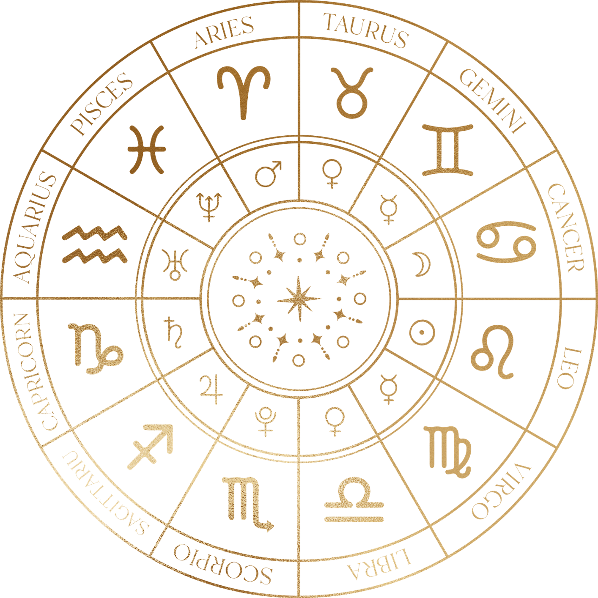

สอนเป็นบท เป็นหมวด
มีเส้นเรื่องชัด ดูจบแล้ว “รู้ว่าควรต่ออะไร” ไม่หลงไปคนละทาง
โหราศาสตร์ไทย • ค่อยเป็นค่อยไป • เน้นเข้าใจ
หน้านี้ทำไว้ให้ “คนเพิ่งเข้ามาใหม่” เริ่มได้ไม่หลงทาง—มีเส้นทางแนะนำและลิงก์ไปยังบทเรียน/คลิปที่ควรดู ก่อน เพื่อปูพื้นให้แน่น แล้วค่อยต่อยอดไปอ่านดวงจริง
เริ่มยังไงดี ไม่ให้สับสน?
เลือกแนวทางตามพื้นฐานของคุณได้เลย
หมายเหตุ: หน้านี้ทำไว้เป็น “แผนที่การเรียน” ไม่ใช่หน้า “ขายดวง” — ตั้งใจให้คนใหม่เริ่มดูคลิปได้ทันที
ถ้าคุณชอบเรียนแบบเรียงลำดับ ไม่กระโดดข้ามขั้น ช่องนี้ทำคอนเทนต์ไว้ค่อนข้างเป็นหมวด อ่านง่ายและทบทวนง่าย
มีเส้นเรื่องชัด ดูจบแล้ว “รู้ว่าควรต่ออะไร” ไม่หลงไปคนละทาง
เน้นเข้าใจเหตุผลมากกว่าท่องจำ ทำให้ต่อยอดได้ยาวๆ
จากจักรราศี → ดาว → เรือนภพ/ทักษา → เกณฑ์ แล้วค่อยเอาไปประกอบการอ่านจริง
จะเริ่มจากศูนย์หรือเลือกเติมเฉพาะจุดที่ยังไม่แน่นก็ได้
อยากเริ่มแบบถูกทาง แต่เปิดเจอคลิปเยอะจนไม่รู้จะดูอะไรก่อน
อยาก “เรียงใหม่ให้เป็นหมวด” จะได้ต่อยอดได้ไม่สะดุด
อยากมีกรอบคิดชัดๆ เวลาอ่านจะชั่งน้ำหนักได้ ไม่เหวี่ยงไปทางใดทางหนึ่ง
แนะนำให้ไล่ตามนี้ก่อน 1 รอบ พอจับแกนได้แล้วค่อยแตกไปดูหัวข้อย่อย
ปูศัพท์และโครงให้แน่น (ราศี/ลัคนา/ธาตุ) เพื่อไม่หลงตอนเริ่มอ่านจริง
ไปที่สารบัญบทเรียนเอาเครื่องมือหลักมาประกอบกัน เพื่อเริ่มอ่านแบบมีโครงและชั่งน้ำหนักได้ดีขึ้น
ถ้าพร้อมแล้ว กดติดตามไว้ก่อน แล้วเริ่มจาก “จักรราศี” ตามเส้นทางด้านบนได้เลย
ทั้งหมดต่อกันเป็นเส้นเดียว แนะนำไล่ 1→2 ก่อน แล้วค่อยเลือกบทที่อยากเติมให้แน่น
ปูพื้นราศี/ลัคนา/ธาตุ และตัวแปรที่ต้องใช้บ่อย
ทำความเข้าใจดาวแต่ละดวง แล้วค่อยเอาไปประกอบการอ่าน
ใช้เรื่องเล่าช่วยจำความสัมพันธ์ของดาวให้ติดหัวแบบไม่งง
เกษตร/อุจจ์/นิจจ์ และตำแหน่งที่ใช้ “ให้ค่าน้ำหนัก”
ภพต่างๆ และวิธีจับเรื่องราวชีวิตให้เป็นขั้นเป็นตอน
อีกเครื่องมือที่ช่วยประกอบการอ่านให้ครบมิติ
กรอบคิดสำหรับชั่งน้ำหนัก แยก “ข้อมูล” ออกจาก “ความรู้สึก”
เกณฑ์เสริมสำหรับเก็บรายละเอียดและเพิ่มความแม่น
เอาเมาส์ไปชี้เพื่อไฮไลต์ช่องสีทอง แล้วคลิกเพื่อดูข้อมูลของราศีนั้น

ถ้าไม่รู้จะเริ่มคลิปไหน ลองเริ่ม 3 คลิปนี้ก่อน แล้วค่อยไล่ต่อเป็นหมวด จะจับภาพรวมไวขึ้น
คลิปสั้นๆ สำหรับปูพื้น—ดูจบแล้วจะอ่านหัวข้ออื่นได้ลื่นขึ้น
เปิดบน YouTubeดูเป็นตัวอย่างก่อน แล้วค่อยไปเลือกราศีของคุณในเพลย์ลิสต์เดียวกัน
เปิดบน YouTubeเห็นภาพการเอา “เรือนภพ” ไปใช้อ่านจริง แบบเป็นขั้นเป็นตอน
เปิดบน YouTubeตั้งใจทำหน้านี้ให้เป็นจุดเริ่ม: เปิดมาแล้วรู้ทันทีว่า “ควรดูอะไรก่อน” และ “จะไปต่อยังไง”
เนื้อหาเน้นโหราศาสตร์ไทย “เชิงวิชา” จัดเป็นบทเป็นหมวดเพื่อให้คนเรียนต่อยอดได้จริง ค่อยๆ ต่อชิ้นส่วนให้ครบ แล้วค่อยไปสู่การพยากรณ์แบบมีเหตุมีผล
เริ่มจาก จักรราศี ก่อน (ให้ศัพท์พื้นฐานชัด) แล้วค่อยไป ดาวพระเคราะห์ จากนั้นต่อด้วย เรือนภพ + ทักษา เพื่อเริ่มประกอบการอ่านให้เป็นขั้นตอน
ช่วงพื้นฐานแนะนำให้ไล่ตามลำดับ (ราศี → ดาว) จะเข้าใจเร็วและไม่สับสน หลังจากนั้นค่อย “เลือกเติม” ตามจุดที่ยังไม่แน่นได้
เป็นหน้านำทางให้คนใหม่รู้ว่า “ช่องนี้สอนอะไร เหมาะกับใคร และควรเริ่มดูชุดไหนก่อน” พร้อมลิงก์ไปยังสารบัญบทเรียน
โฟกัส เรือนภพ, ทักษา, และ เกณฑ์ เพราะเป็นชุดที่ช่วย “ชั่งน้ำหนัก” และประกอบการอ่านให้ครบมิติ
กดติดตามไว้ แล้วเริ่มจากพื้นฐานตามเส้นทางที่แนะนำ—ค่อยเป็นค่อยไป แต่มั่นคง